Create Image Card
In Maximo Asset Monitor, images can add a tremendous amount of value to data visualization when paired with graphs, tables, and value cards. You can display an image on your dashboards. You are also able to place icons which called hotspots on the image cards. These icons are tied to data from individual sensors or an aggregate of all of the sensors on a summary dashboard.
Create Image Card with the UI widget
- Save this image by right clicking then choose Save Image As...

- Click on the
gear iconand choose Manage instance dashboard - Click on Image
- Click on the Image card and upload the image
site_map.pngfrom step 1. - Title: Site Map
- Time range:
Last 24 hours - Click on Edit image
- Click on the map to create a hotspot Note: if your data has x, y location coordinates you can specify them here
- Title: Robot
- Icon:
User - Color: Blue
- Click on
Datasourceand choose the following: Entity_Id, Travel time, Work performed - Click Save
- Click Add Card
- Save and Close
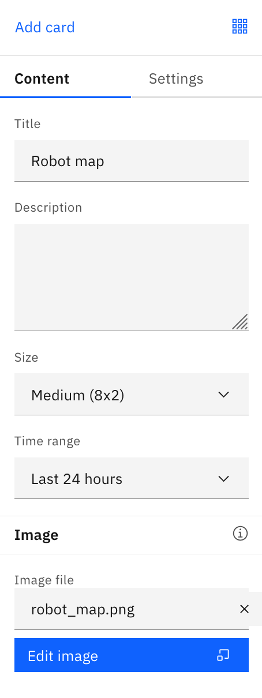 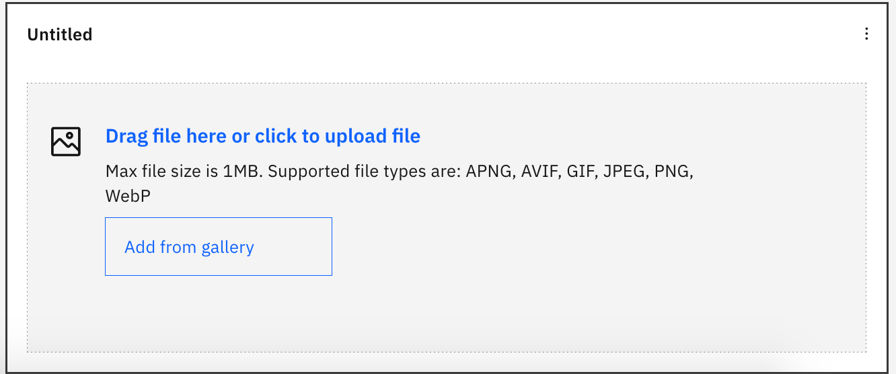 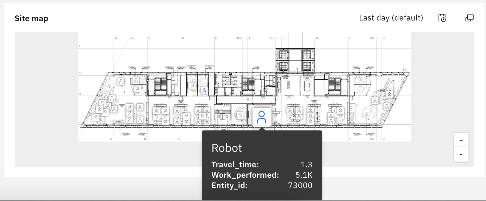
Create Image Card with JSON
Using a REST API call, you are able to push an image of your choosing into the Monitor data lake and display this image on your dashboards. Inside of the JSON configuration for the image card, you are able to set alert conditions that change the icon on the hotspot. 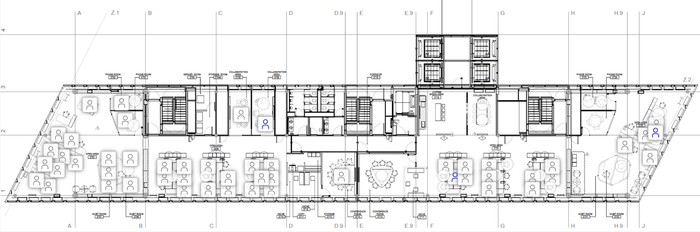
Here is what you see when you click on one of the hotspots.

The image card above displays an occupancy use case. Individual occupancy sensors have been tied to each hot spot to indicate whether seats in a meeting room in the Munich IoT center are occupied. The image above shows a much more complicated image card with hotspots than you will be creating in this Exercise, but this example is something that you could use eventually in the real world.
In this Exercise, you will learn how to select a photo for your image card, push your image into the Monitor data lake using a REST API call, and finally display your image card on a dashboard in Monitor. You will need Postman for this section. Please download the application at this link if you have not already: https://www.getpostman.com/
Upload Image to Monitor Datalake
Choose Image
- Choose an image that allows you to use hotspots to tell a meaningful story. For example, choosing a floor plan of a factory floor where you can tie hotspots to assets on the floor would tell an important and meaningful story.
- Choose an image that is smaller than 1MB. Your API call will not be successful if you try to push a larger file.
- These are the types of files that you can push into the Monitor data lake. 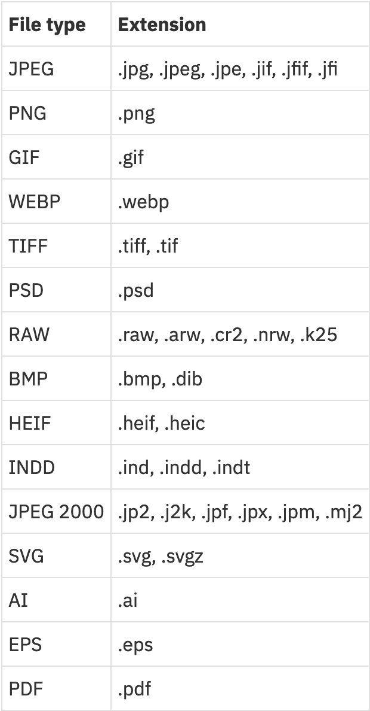
Obtain API Key
- Open up your Maximo Asset Monitor tenant.
- Open up the hamburger menu on the left side and select
Services. 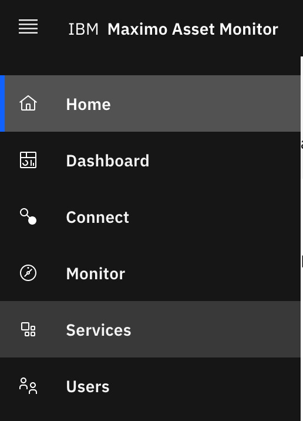 - Next to
Watson IoT Platform Service, clickView Detailsand then clickView More. 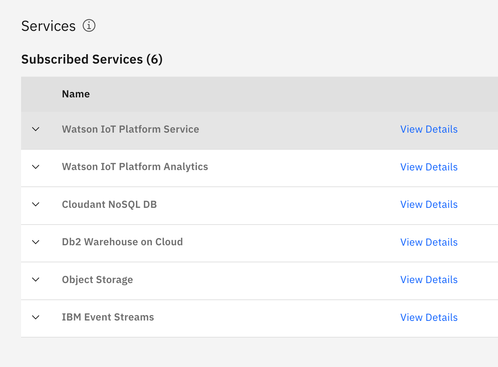 - Copy and paste the
API KeyandAPI Tokeninto a Notes application of your choosing. It is good to save this information in a place that is easy to access. You will most likely use this API Key and Token again. 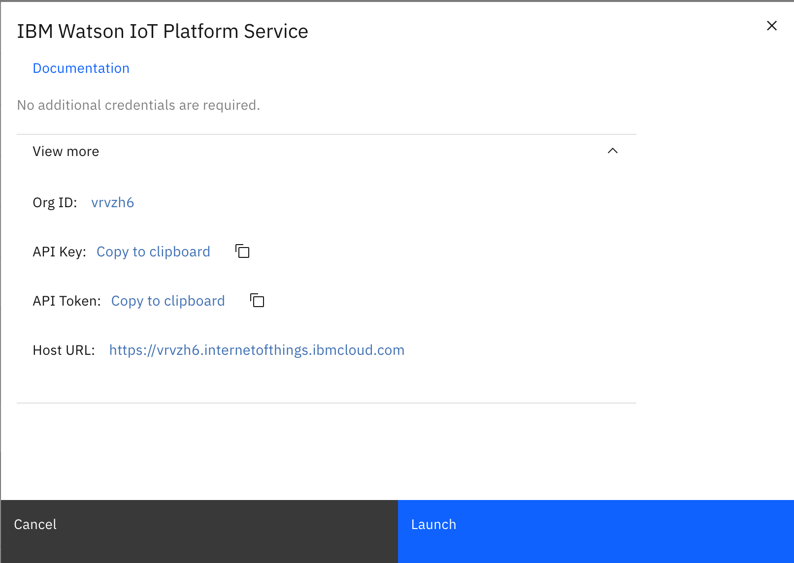
Push Image to Data Lake using Postman
- Open up your
Postmanapplication. - In the top left corner you will see a button that says
+New. Click on theRequestbutton. Name your Request and create a Collection to place the Request. Click the dropdown menu inside the red box in Postman to classify this API Call as aPOSTRequest.
- Copy and paste this link into the field where it says “Enter request URL”:
https://api-{{geo_country_code}}.connectedproducts.internetofthings.ibmcloud.com/api/images/v1/{{tenantID}}/entityType/{{entityTypeName}}You will need to replace the text in double curly braces{{}}with data associated with your Monitor workspace. First, you will need to replace{{geo_country_code}}with your specific country code. You can find your country code in your Monitor URL. The beginning of your URL will behttps://dashboard-{{geo_country_code}}, eitherus,uk,de, orbeta. Next, you will need to replace{{tenantID}}with your Maximo Asset Monitor Tenant ID. You can find your tenant ID in the top right corner of your Monitor webpage underneath your IBMiD. Last, you will need to enter the name of your Entity Type in place of{{entityTypeName}}.
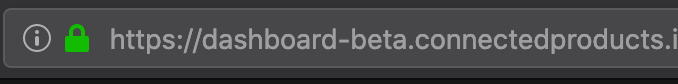 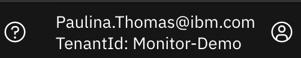
- Now that you have modified the request URL, we will add the header. Please have handy the API Key and Token you obtained earlier. Add this information into the
Headertab, :
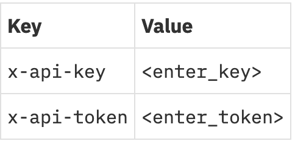 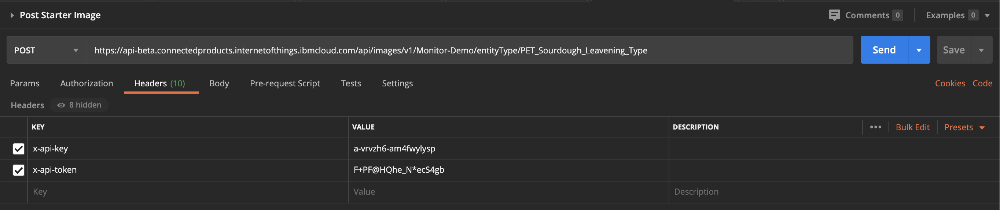
- Now, navigate to the
Bodytab and the selectform-dataradio button.

- Enter the form data specified below. Make sure to select
Filefrom the drop down button next to yourimagefilecontent. This option will allow you to select the image file you chose in the first section of this Exercise.
 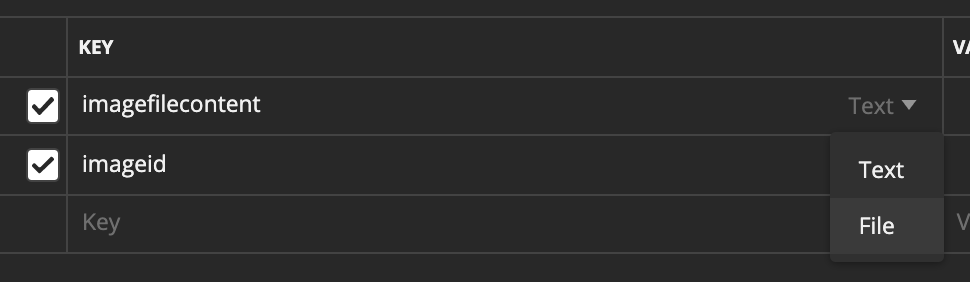
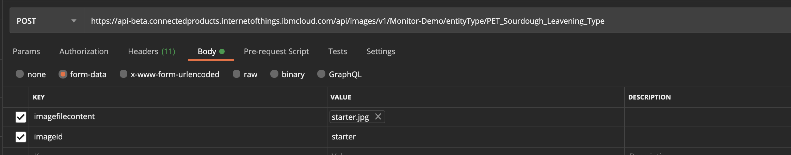
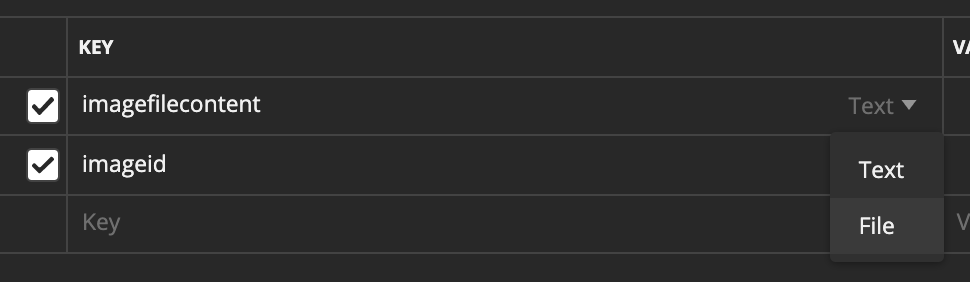
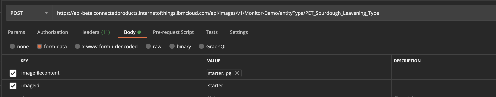
- Click the blue
Sendbutton to send your request. You should receive a200 OKmessage. If you do not, make sure that everything in this section has been entered correctly. If this work is to no avail, contact your administrator.
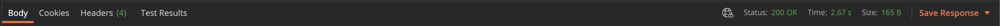
Display Image Card on Dashboard
Now that you have pushed the image of your choice into the Monitor data lake, you will now need to create a JSON object for the image card you wish to display. In this JSON code, you will tell Monitor what data to show, where to show that data, and how you want the data to be shown. The JSON code that will be shown in the later steps corresponds with the summary dashboard shown below:
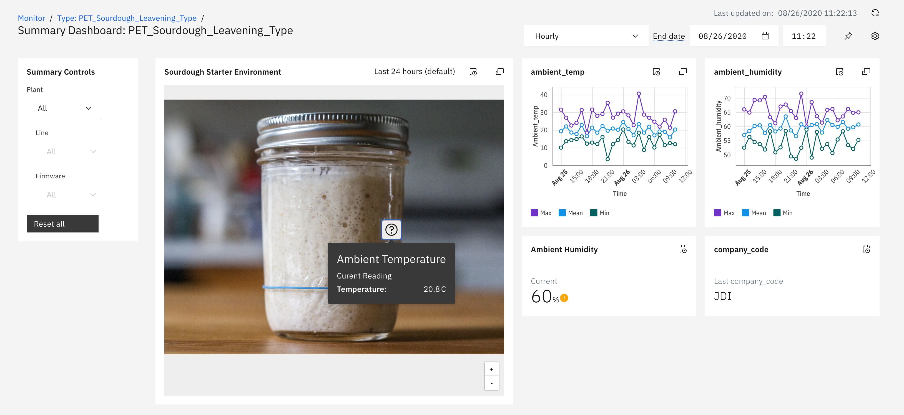
Export Dashboard JSON
- Open up the landing page for your entity type and select the dashboard you will be uploading your image card to.
- Click on the gear in the top right of your chosen dashboard. 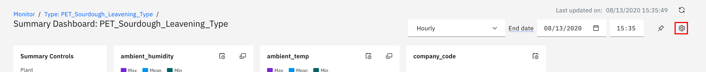
- Click
Edit Dashboard. 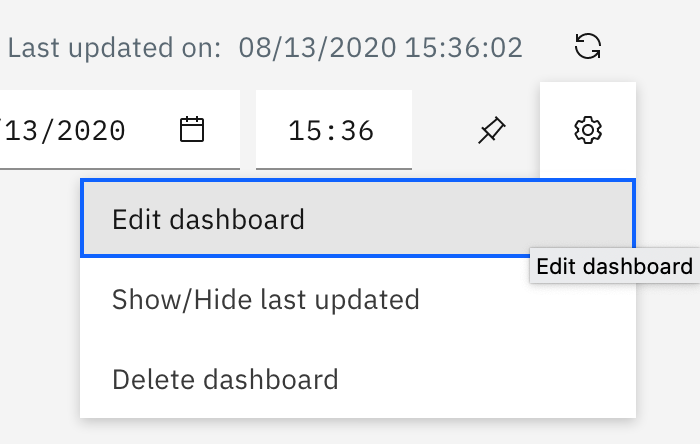 - Click
Exportand save your JSON into a folder that you can keep handy. Make sure to save the file with the file extension.json. Open the file in a text editor of your choice. Here are some good open source options: Atom, Brackets, and Sublime.
Create Image Card JSON Object
- Please copy and paste the JSON code block below into the top of your
cardsarray.
{
"id": "starter-image-card",
"size": "LARGE",
"title": "Sourdough Starter Environment",
"type": "IMAGE",
"content": {
"alt": "Sourdough Starter Environment",
"zoomMax": 1,
"image": "starter",
"hotspots": [
{
"icon": "icon--info--solid",
"color": "'#0F0",
"content": {
"title": "Ambient Temperature",
"description": "Curent Reading",
"attributes": [
{
"dataSourceId": "ambient_temp",
"label": "Temperature",
"unit": "C"
}
]
},
"locations": [
{
"x": "66",
"y": "50"
}
],
"thresholds": [
{
"dataSourceId": "ambient_temp",
"comparison": ">=",
"value": 27,
"color": "red",
"icon": "icon--warning--solid"
}
]
}
]
},
"dataSource": {
"attributes": [
{
"aggregator": "last",
"attribute": "ambient_temp",
"id": "ambient_temp"
}
],
"range": {
"type": "rolling",
"count": -24,
"interval": "hour"
}
}
},
-
The information below gives you the tools you need to map the data items in your Entity Type to the card you will display with your JSON code. 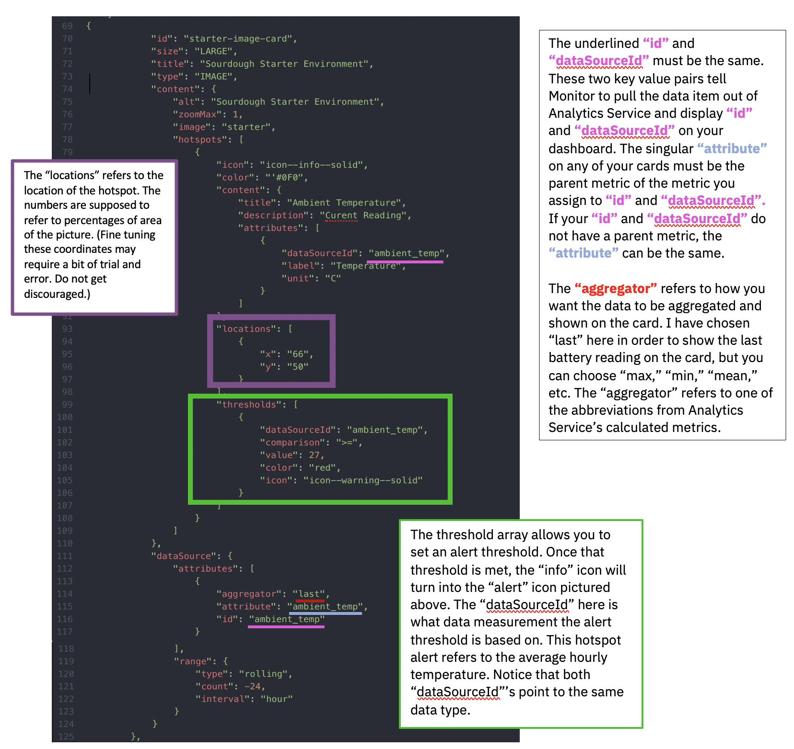 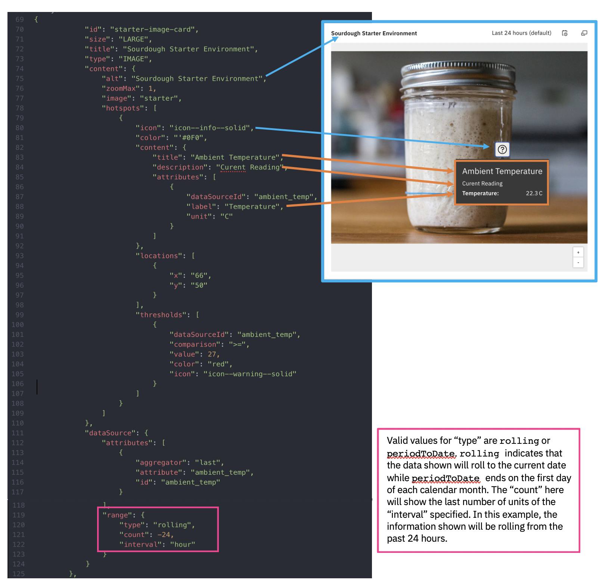
-
The
idat the very top needs to be a unique name for this card. Use dashes instead of spaces. - The
sizeis self explanatory. Image cards render best asLARGE. - The
typeis the type of card such asVALUE,TIMESERIES, orIMAGE. unitrefers to the unit of measurement belonging to your data item.altrefers to the title that will be presented if the picture does not load for some reason.-
imagerefers to the image that you pushed into the data lake. This value must be identical to theidvalue from your Postman image call. -
Using the framework above, map the data items that are in your Entity type to display your image card on a summary dashboard. Replace the data items in the above JSON with the applicable data items, titles, and other information from the Entity Type you are working with to tell the story you are trying to tell. If you are confused, please reference the Knowledge center page for adding image cards here.
- Finally, save your file with your finished image card. Be sure to employ version control and save your file with a new name every time you make serious changes in case you make an error. You want to make sure you always have a working file.
Upload Your Image Card JSON
- Open up the landing page for your entity type and select the dashboard you will be uploading your image card to.
- Click on the gear in the top right of your chosen dashboard.
- Click
Edit Dashboard. - Click
Importand select the file that you have just been working on. If you are successful, a large grey square will appear among your line graphs to drag and drop until you are satisfied with the layout. If you are unsuccessful, you will receive an error. The error message will notify you of something to change. Another option is to use a JSON parser on the internet that will notify you if your JSON has discrepancies. If at first you do not succeed, try, try again!